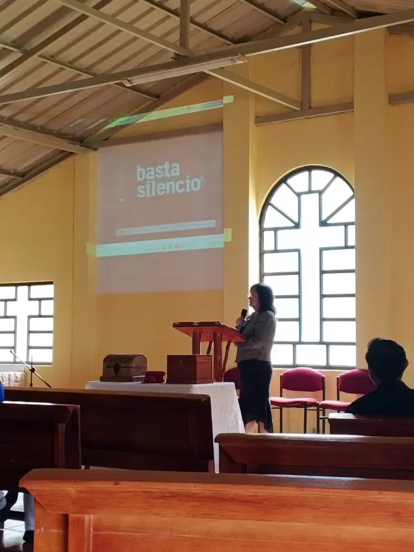
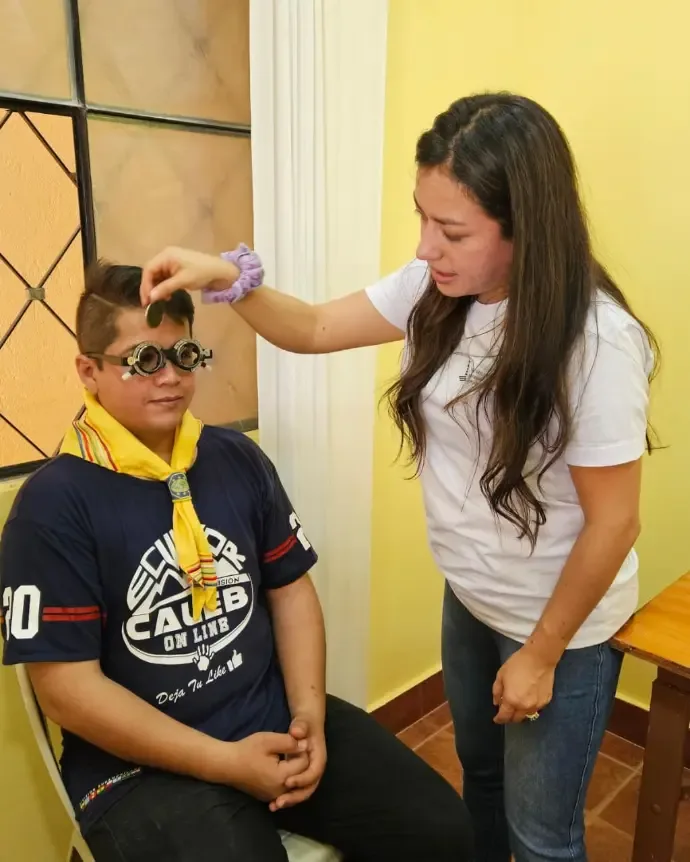
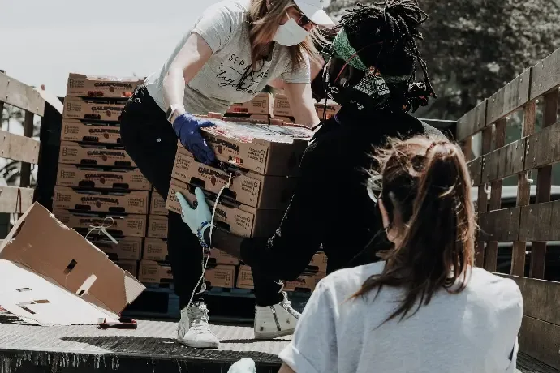

{{ t.heroEyebrow }}
{{ t.heroTitle }}
{{ t.heroSub }}

{{ t.p1kicker }}
{{ t.p1title }}
{{ t.p1slogan }}
{{ t.p1p1 }}
{{ t.p1p2 }}

{{ t.p2kicker }}
{{ t.p2title }}
{{ t.p2slogan }}
{{ t.p2p1 }}
{{ t.p2p2 }}
